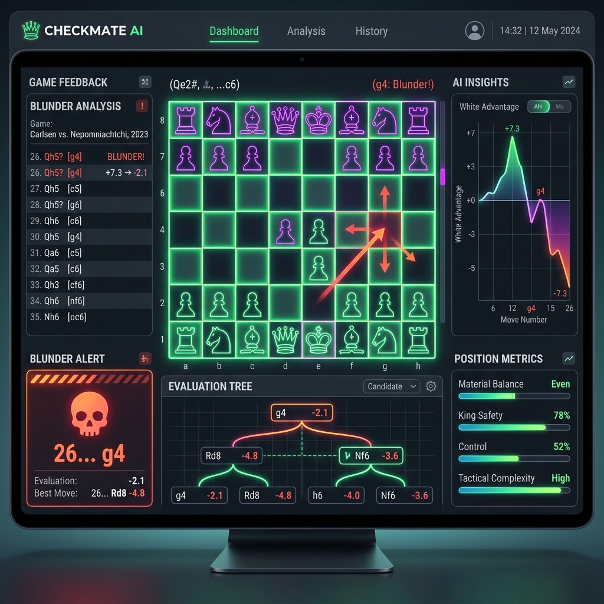

Started with C++ algorithms. Ended up engineering neural networks.
You've seen0%
--:--:--
nK
Creative by day,
more focused
by
midnight.
20:00
00:00
Started AsCompetitive Programmer
BecameMachine Learning Engineer
CurrentlyAI/ML Developer
CHITKARA '28Punjab, India
GO ON, SCROLL DOWN
"If I ever write a book on how I view artificial intelligence, it will start from first principles. And I'll still be learning every single day."
Go on, scroll down
FIGMA
COLDPOP
PEPSI
ORIGINAL COLA
nkAI Lab
02 -- one yes led to the nextthings that happened
CONSISTENCY
150+
LEETCODE SOLVED
crazy what happens when you solve problems with persistent focus.
CORE PHILOSOPHY
MODELS WITH A PURPOSE.
I am an engineer at heart. I obsess over clean logic and architecture, but I love it even more when my models actually solve complex tasks and deliver reliable predictions.
smart algorithms that actually work.
// ACADEMICS & TRACK RECORD
CS Undergraduate at Chitkara University.
Specializing in AI & Machine Learning with an active 8.8 / 10 CGPA across core algorithms & CS fundamentals.
Certified by Stanford / DeepLearning.AI, IBM, Microsoft Azure, Google & HarvardX.
VERIFIED
learned a lot here
CGPA 8.8Academic Record
top quartile in CS cohort.
300+GitHub Commits
Open-source code across AI & Web
5 CertsStanford • IBM
gotta keep skills sharp.
still learning every day.
PS// The goal is simple: engineer reliable AI models, solve complex software challenges, and build tools that provide real value.
KEEP SCROLLING
I'm an open book.
Here is the unfiltered timeline of how I fell in love with AI & code.
01 -- ORIGINTHE BEGINNING
how it all started.
I STARTED WRITING
CODE & AI
FOUR YEARS AGOBECAUSE I WANTEDTO MASTER
ALGORITHMS
FROM SCRATCH.
I had no idea what 'gradient descent' or 'backpropagation' was in school. I was just writing C++ loops, tinkering with logic, and building small games and tools on my own...
I didn't care about corporate buzzwords. I kept building because I loved seeing algorithms solve real problems.

how it all started.
first custom AI engine.
GOD'S PLAN
PROJECTS
Sector 03 / Alpha
System_Active
Section 03
Projects
A QUICK NOTE
Worth a look.But If you're short on time, click any project card below to dissect architecture & technical metrics.
Section 04
Best
Work
दिल्ली मेट्रो में आपका स्वागत है
Welcome to Delhi Metro
driven by a self proclaimed artist
BLUE LINE // DELHI METRO
built in new delhi ///powered by caffeine
caution: can run even after 11pm due to late night designing hobby